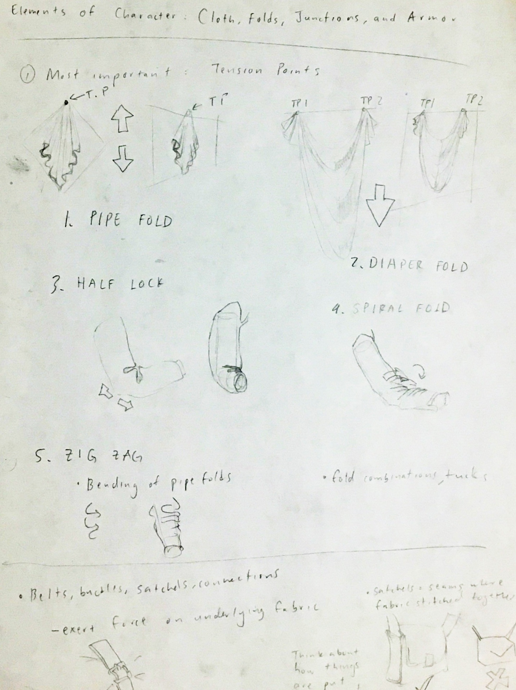
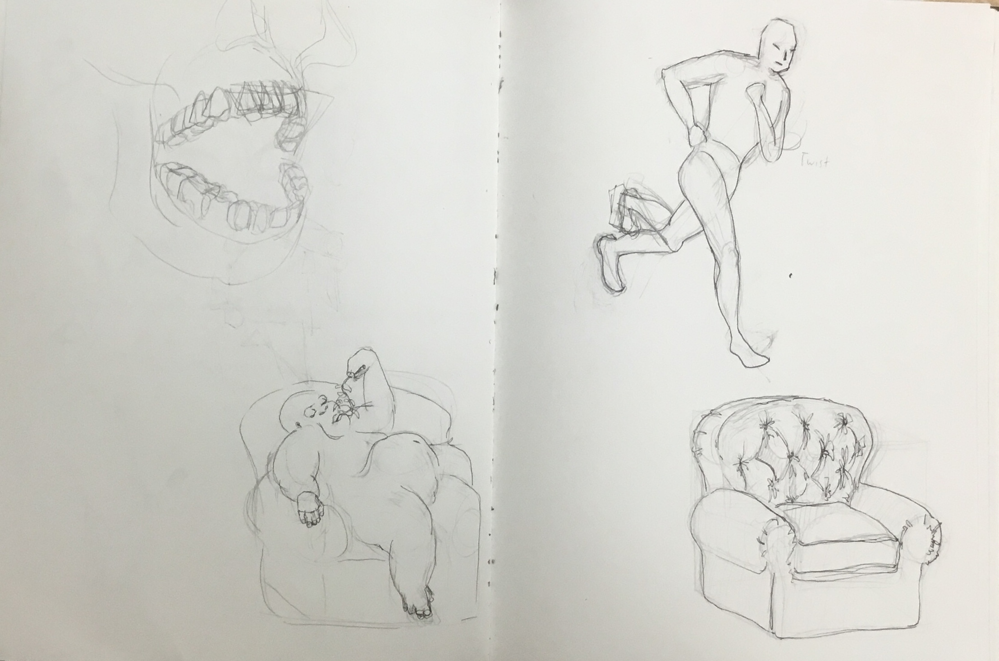
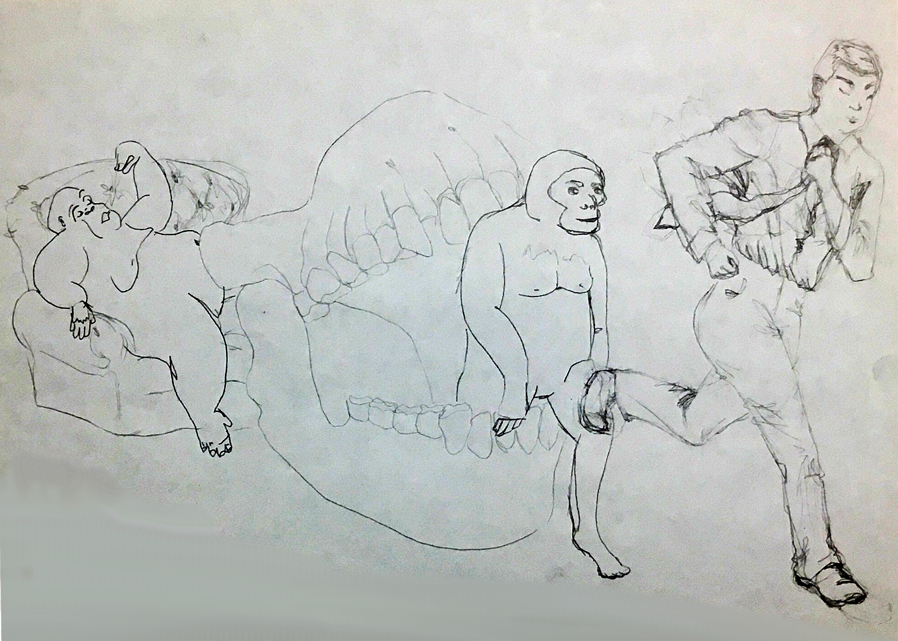

This was a really fun illustration to make :))) At every step there was something interesting to discover...perhaps that is the joy of being a beginner! I’m glad I gave the idea a try.
Sometimes I browse magazines at the library when I’m procrastinating on work (...it feels productive hahaha). This article was from Scientific American: "Evolved to Exercise" by Herman Pontzer. It’s about how we humans require high levels of physical activity to maintain our health, whereas apes -- our closest living relatives -- get to be sloths and laze around without health sacrifices.
Why is this? How, evolution, can you be so unjust? The answer is: diet. Ape ancestors subsisted on plants, which were an abundant and stationary food source. Early humans, however, began to hunt for meat, requiring regular movement and high levels of physical activity. Natural selection did its thing, and our limbs, our metabolisms--even our brains--evolved to adapt to the hunter-gatherer lifestyle.
One thing that really fascinated me was how much teeth can reveal about a species. The article mentioned that large, thick-enameled molars meant that Australopithecus (early humans) diets likely relied on harder and more fibrous foods. Australopithecus males also lost their large, sharp canines, indicating changes in social behavior (the meat diet requires cooperation and sharing). It reminded me of another piece I read, which said many of today’s orthodontic problems (teeth overcrowding, misalignment, etcetera) are due to changes in jaw structure that occured when humans transitioned from hunting to farming. Agricultural foods were softer, so jaws grew thinner with each generation.
A cool reminder that we are in the midst of evolution!
This guy has an incredible number of tutorials that are super informative. I took some notes on “ELEMENTS OF CHARACTER: Cloth, Folds, Junctions, and Armor”, which motivated me to draw something with clothes in it.
II.Yuko Shimizu
(❤0❤)
My encounter with Yuko's art felt something like fate. When I arrived to my studio arts class, there was a Communication Arts magazine lying at my seat. Instead of putting it away, I snuck a peek, recording the names of artists whose work caught my eye. Yuko’s work drew me in because her lines had a certain energy to them...plus I’m a sucker for anything with an ukiyo-e feel (later I found out Hokusai is one of her lasting influences!). Her perspectives and ideas are surreal...I feel her art style is irreplaceable.
Besides being an awesome artist, she’s also just a cool woman in general. I encourage you to look her up, read her story. Her instagram is an educational experience; she’s always teaching!
I took on a Skillshare trial to watch her inking videos. Thankfully I had some Chinese ink and cheap watercolor brushes at hand, so I got to apply her tips to this drawing.
I’m grateful the Communication Arts magazine was left at my seat in particular :))
Research/Planning
Drafting
Inking
Color/Final
I can only be grateful for all the resources and the people that have given me time and materials to create. There are too many to list; I know they are not accessible to everyone in the world. I cannot say I am particularly deserving, just that I am incredibly lucky.
I know this is unrelated to the art, but it felt right to at least acknowledge resources I have enjoyed. Now is a better time than never.
If you have read to this point, thanks for sticking around :DD